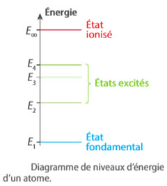
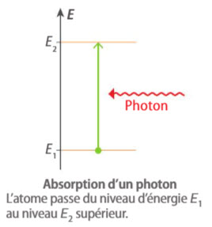
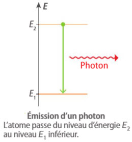
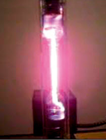
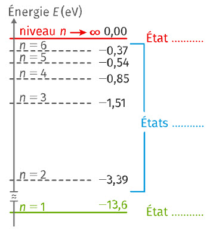
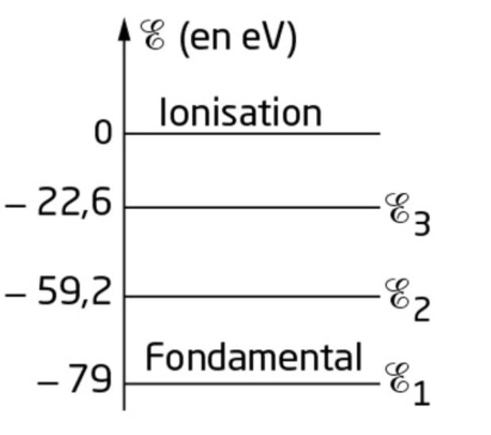
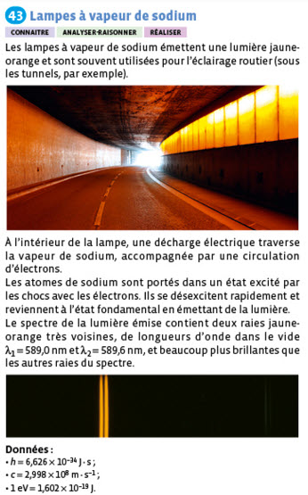
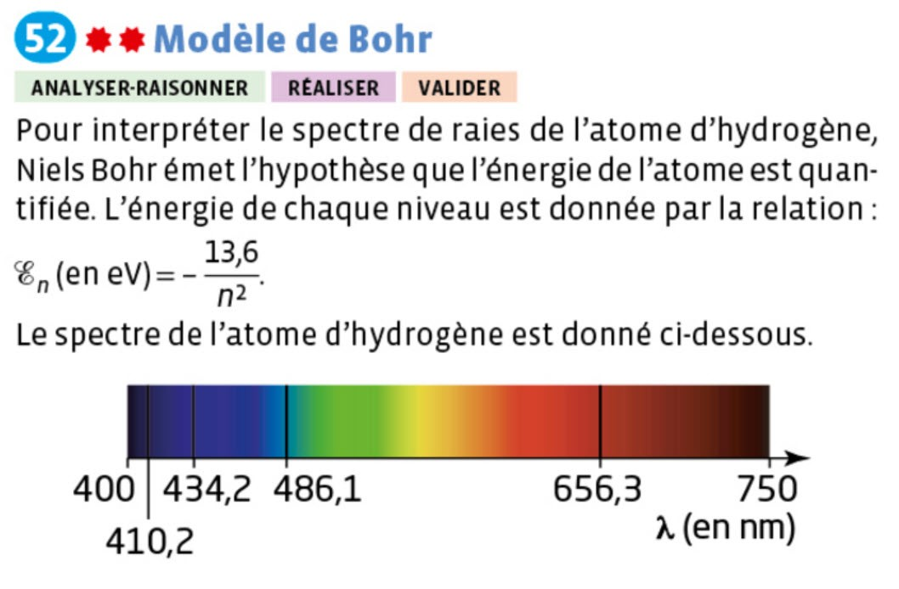

Dispersion de la lumière : un prisme ou un réseau dévie différemment les différentes couleurs qui composent une lumière ; on obtient ainsi son spectre.
Longueur d'onde dans le vide ou dans l'air : elle caractérise une radiation lumineuse et s'exprime en mètre (souvent en nanomètre, 1 nm = 10⁻⁹ m). Le domaine du visible s'étend approximativement de 400 nm (violet) à 800 nm (rouge).
Une radiation lumineuse monochromatique est caractérisée par sa longueur d'onde dans le vide (en m) et sa fréquence (en Hz). Ces deux grandeurs sont liées par la célérité de la lumière dans le vide c = 3,00×10⁸ m·s⁻¹ :
Plus la longueur d'onde est petite, plus la fréquence — et donc l'énergie transportée — est grande (cf. onglet « Photon & niveaux d'énergie »).
La lumière visible n'est qu'une toute petite partie du spectre électromagnétique. On peut situer un domaine spectral en comparant sa longueur d'onde (ou sa fréquence) à celles du visible.
| Domaine | Longueur d'onde (ordre de grandeur) | Exemple d'application |
|---|---|---|
| Ondes radio | > 1 m | Radiodiffusion FM |
| Micro-ondes | ≈ 1 cm à 1 m | Four à micro-ondes, wifi |
| Infrarouge (IR) | 800 nm – 1 mm | Télécommande, imagerie thermique |
| Visible | 400 nm – 800 nm | Vision humaine |
| Ultraviolet (UV) | 10 nm – 400 nm | Stérilisation, bronzage |
| Rayons X | < 10 nm | Imagerie médicale (radiographie) |
La même information que le tableau ci-dessus, replacée sur une échelle logarithmique commune en fréquence et en longueur d'onde — le domaine visible n'occupe qu'une fraction infime de tout le spectre électromagnétique.
Unités SI — λ en mètre (m) · c en m·s⁻¹ · T en seconde (s) · ν en hertz (Hz)
▶ Source d'inspiration — Frise interactive « Domaines spectraux » (Genially)Un corps porté à haute température émet de la lumière : c'est l'incandescence. Plus la température est élevée, plus le spectre est riche vers les courtes longueurs d'onde (le corps devient « blanc chaud »).
- Le Soleil et les étoles
- Le filament d'une ampoule à incandescence
- La lave, les braises
Une source froide émet de la lumière sans élévation de température importante, par exemple lors d'une décharge électrique dans un gaz (luminescence).
- Lampes à vapeur de mercure ou de sodium (éclairage public)
- Tubes néon, LED
- Aurores polaires, vers luisants (bioluminescence)
Un spectroscope (ou spectromètre) est l'appareil qui permet d'observer le spectre d'une lumière. Il comporte toujours :
- une fente fine par laquelle entre la lumière à étudier ;
- un élément dispersif — un prisme ou, le plus souvent, un réseau de diffraction — qui dévie différemment chaque longueur d'onde ;
- une échelle graduée (en nm) sur laquelle se projette le spectre obtenu, ou un capteur qui l'enregistre.
On regarde directement, à travers le spectroscope, la lumière émise par la source étudiée (lampe à vapeur de mercure ou de sodium, filament chaud…). On observe alors exactement les radiations réellement émises par cette source : spectre continu pour une source chaude, spectre de raies pour une source froide.
On place un gaz plus froid que la source sur le trajet de la lumière issue d'une source chaude à spectre continu, puis on observe à travers le spectroscope. Les longueurs d'onde absorbées par le gaz manquent alors à l'arrivée : elles apparaissent comme des raies noires sur le fond continu coloré.


La photosphère (surface du Soleil) émet bien un spectre continu, car c'est une source chaude. Mais cette lumière traverse ensuite des couches de gaz plus froids — la chromosphère solaire, puis l'atmosphère terrestre. Les atomes de ces gaz absorbent exactement les longueurs d'onde qui correspondent aux écarts d'énergie entre leurs niveaux : ces radiations manquent alors à l'arrivée, ce qui crée des raies noires dans le spectre continu.
- Spectre continu (polychromatique) : émis par une source chaude ; toutes les radiations d'un domaine sont présentes.
- Spectre de raies (discontinu) : émis par une source froide (gaz sous faible pression) ; seules certaines radiations bien précises sont émises. Chaque élément chimique possède son propre spectre de raies, comme une « carte d'identité ».
En 1905, Albert Einstein propose que l'énergie de la lumière est transportée par « paquets » : les quanta de lumière, appelés plus tard photons. On parle de modèle particulaire de la lumière, complémentaire du modèle ondulatoire : selon le phénomène étudié, on utilise l'un ou l'autre.
Un photon :
- a une masse nulle et se déplace dans le vide à la célérité c = 3,00×10⁸ m·s⁻¹, quelle que soit sa couleur ;
- transporte un quantum d'énergie, c'est-à-dire une quantité d'énergie bien déterminée, qui dépend de la radiation ;
- est échangé en entier : un atome l'absorbe ou l'émet en totalité, jamais en partie.
- E : énergie d'un photon, en joule (J) ;
- h = 6,63×10⁻³⁴ J·s : constante de Planck ;
- ν : fréquence de la radiation, en hertz (Hz) ;
- c = 3,00×10⁸ m·s⁻¹ : célérité de la lumière dans le vide ;
- λ : longueur d'onde dans le vide, en mètre (m).
En physique atomique, l'énergie est souvent exprimée en électronvolt (eV), avec 1 eV = 1,60×10⁻¹⁹ J.
Chaque paquet d'onde représente un photon. Clique sur une situation, puis fais varier la luminosité : qu'est-ce qui change ? Qu'est-ce qui ne change pas ?
Modèle non à l'échelle : un photon n'est ni une bille ni un petit serpent. Le paquet d'onde est une image qui rappelle les deux modèles de la lumière. Une vraie lampe émet des milliards de milliards de photons par seconde.
Imagine que chaque photon est une pièce de monnaie dont la valeur dépend de sa couleur : un photon bleu est une « pièce » de plus grande valeur qu'un photon rouge.
Une lumière plus intense revient à recevoir plus de pièces, pas des pièces de plus grande valeur.
Limite de cette image : des pièces s'additionnent. Un atome, lui, n'additionne pas deux photons pour changer de niveau d'énergie : dans le cadre de ce cours, un seul photon doit apporter exactement l'énergie nécessaire.
Calculer l'énergie d'un photon de longueur d'onde λ = 589 nm, en joule puis en électronvolt.
Conversion : λ = 589 nm = 589×10⁻⁹ m
Formule : E = h × c / λ
Calcul : E = 6,63×10⁻³⁴ × 3,00×10⁸ / (589×10⁻⁹)
Résultat : E = 3,38×10⁻¹⁹ J
En électronvolt : E = 3,38×10⁻¹⁹ / 1,60×10⁻¹⁹ = 2,11 eV
Niels Bohr, en 1913, a postulé que l'énergie d'un atome ne peut prendre que certaines valeurs bien définies : on dit que l'énergie d'un atome est quantifiée. Un atome ne peut exister que dans des états bien définis, chaque état étant caractérisé par un niveau d'énergie.
- L'état de plus basse énergie est appelé état fondamental : c'est l'état le plus stable, dans lequel l'atome se trouve en l'absence d'apport extérieur d'énergie.
- Les autres états, d'énergie supérieure, sont appelés états excités : un atome excité est instable et retourne spontanément vers un niveau d'énergie inférieur.
- Si l'atome reçoit assez d'énergie pour atteindre le niveau E∞, il perd un électron : on obtient un atome ionisé, c'est-à-dire un ion positif. L'énergie d'ionisation est l'énergie minimale à fournir à l'atome, depuis son état fondamental, pour l'ioniser.

Spectre d'absorption
Lors d'une transition d'un niveau donné vers un niveau supérieur, l'atome reçoit de l'énergie. Cette transition peut être provoquée par l'absorption d'un photon dont l'énergie E est exactement égale à la différence d'énergie entre les deux niveaux :

Spectre d'émission
Lors d'une transition d'un niveau donné vers un niveau inférieur, l'atome cède de l'énergie : il y a émission d'un photon dont l'énergie est égale à la diminution d'énergie de l'atome :

Une lumière blanche traverse un gaz froid. Ses atomes sont à l'état fondamental E₀. Chaque flèche montre une transition possible, et elle se trouve juste au-dessus de sa raie noire. Clique sur une flèche, une raie ou un bouton.
Modèle simplifié : seuls quelques niveaux et transitions sont représentés (valeurs arrondies), et certaines transitions n'ont pas lieu, pour des raisons hors programme. Les flèches ne donnent pas l'intensité des raies.
Dans une lampe, la décharge électrique excite les atomes. En redescendant vers un niveau inférieur, chaque atome émet un photon. Chaque flèche montre une transition, et elle se trouve juste au-dessus de sa raie colorée. Clique sur une flèche, une raie ou un bouton.
Modèle simplifié : seuls quelques niveaux et transitions sont représentés (valeurs arrondies), et certaines transitions n'ont pas lieu, pour des raisons hors programme. Les flèches ne donnent pas l'intensité des raies.
Le Soleil est une source chaude : son spectre est continu. Mais en l'observant avec un spectroscope suffisamment précis, on constate qu'il est en réalité strié de fines raies noires : ce sont les raies d'absorption de Fraunhofer. Clique pour les révéler.
Déplace le curseur pour explorer le spectre visible et lire la longueur d'onde, la fréquence et le domaine spectral associés.
Renseigne une seule des trois grandeurs puis clique sur « Calculer » : les deux autres seront déduites à partir de E = h × fréquence = h × c / longueur d'onde.
Astuce : la raie jaune du sodium a pour longueur d'onde environ 589 nm — essaie de retrouver son énergie en eV !
Choisis un niveau de départ et un niveau d'arrivée pour un atome fictif possédant 4 niveaux d'énergie, puis clique sur « Tracer la transition » pour voir s'il s'agit d'une absorption ou d'une émission, calculer l'énergie, la fréquence et la longueur d'onde du photon échangé, et visualiser la raie que cette transition produit sur un spectre.
Dans le simulateur, choisis l'atome étudié, puis clique sur les niveaux d'énergie pour sélectionner une transition. Il note le niveau fondamental E₀.
🔬 Ouvrir le simulateur de spectresDonnées : h = 6,63×10⁻³⁴ J·s ; c = 3,00×10⁸ m·s⁻¹ ; 1 eV = 1,60×10⁻¹⁹ J.
Partie 1 – L'hydrogène : retrouver les raies visibles
À la fin du XIXe siècle, Johann Balmer étudie les raies du spectre visible de l'hydrogène. On cherche à les retrouver à partir du diagramme d'énergie.
1. Déterminer, en eV, l'énergie maximale Emax d'un photon de lumière visible, pour λmin = 400 nm.
2. Déterminer, en eV, l'énergie minimale Emin d'un photon de lumière visible, pour λmax = 800 nm.
3. Sur le diagramme de l'hydrogène du simulateur, repérer les transitions dont l'écart ΔE vérifie Emin < ΔE < Emax.
4. Vérifier la réponse avec le simulateur et en déduire les radiations visibles du spectre d'émission de l'hydrogène.
1. Emax = 6,63×10⁻³⁴ × 3,00×10⁸ / (400×10⁻⁹) = 4,97×10⁻¹⁹ J, soit 3,11 eV.
2. Emin = 6,63×10⁻³⁴ × 3,00×10⁸ / (800×10⁻⁹) = 2,49×10⁻¹⁹ J, soit 1,55 eV.
3 et 4. Quatre transitions conviennent, avec En = −13,6 / n² :
- n = 3 → n = 2 (E₂ → E₁) : ΔE = 1,89 eV, soit environ 658 nm ;
- n = 4 → n = 2 (E₃ → E₁) : ΔE = 2,55 eV, soit environ 488 nm ;
- n = 5 → n = 2 (E₄ → E₁) : ΔE = 2,86 eV, soit environ 435 nm ;
- n = 6 → n = 2 (E₅ → E₁) : ΔE = 3,02 eV, soit environ 411 nm.
La transition n = 7 → n = 2 donne ΔE = 3,12 eV, soit environ 398 nm : elle est juste en dehors de l'intervalle retenu. De légers écarts avec le simulateur peuvent venir des arrondis.
Partie 2 – Le lithium : de la transition à la longueur d'onde
On s'intéresse à la transition E₃ → E₁ de l'atome de lithium.
1. Cette transition correspond-elle à une émission ou à une absorption de photon ?
2. Calculer la longueur d'onde du rayonnement associé.
3. Cette radiation est-elle dans le domaine du visible ?
4. Vérifier les réponses en sélectionnant les niveaux E₃ et E₁ sur le diagramme.
1. E₃ est supérieur à E₁ : l'atome descend et perd de l'énergie. C'est une émission.
2. ΔE = E₃ − E₁, avec les valeurs lues sur le diagramme. On convertit : ΔE (en J) = ΔE (en eV) × 1,60×10⁻¹⁹. Puis λ = hc/ΔE, avec h = 6,63×10⁻³⁴ J·s et c = 3,00×10⁸ m·s⁻¹.
3. La radiation est visible si λ est comprise entre 400 nm et 800 nm.
4. La longueur d'onde affichée par le simulateur doit être proche de ton calcul.
Partie 3 – Le sodium : de la longueur d'onde à la transition
Les lampes à vapeur de sodium émettent une lumière jaune orangé. On considère une raie de leur spectre de longueur d'onde λ = 569 nm.
1. Déterminer la différence d'énergie correspondant à cette radiation.
2. À quelle transition cette radiation est-elle associée ?
3. Vérifier la réponse en sélectionnant les deux niveaux sur le diagramme.
1. ΔE = 6,63×10⁻³⁴ × 3,00×10⁸ / (569×10⁻⁹) = 3,50×10⁻¹⁹ J, soit 2,19 eV.
2 et 3. La transition cherchée relie les deux niveaux du diagramme dont l'écart vaut environ 2,19 eV. L'atome descend de l'un à l'autre, puisqu'il s'agit d'une émission. Le simulateur doit alors afficher une longueur d'onde proche de 569 nm.
Pour aller plus loin (activités du simulateur, sans correction ici) :
L'atome de mercure : désexcitations successives
La découverte du césium : signature dans l'eau de Durkheim
Les niveaux d'énergie de l'atome d'hydrogène sont donnés, en eV, par En = −13,6 / n². Le programme ci-dessous calcule les écarts d'énergie entre les sept premiers niveaux, en milliélectronvolt (meV), avec 1 meV = 10⁻³ eV.
Données : h = 6,63×10⁻³⁴ J·s ; c = 3,00×10⁸ m·s⁻¹ ; 1 eV = 1,60×10⁻¹⁹ J.
1. Modifier le code pour afficher les longueurs d'onde, en nm, de toutes les radiations émises par l'atome d'hydrogène.
2. Repérer, dans les résultats, les transitions qui correspondent à une radiation visible.
3. Vérifier les réponses avec le diagramme du simulateur.
1. Une solution possible, à exécuter ou à modifier :
2. Quatre radiations sont comprises entre 400 nm et 800 nm : 658 nm (n = 3 → n = 2), 488 nm (n = 4 → n = 2), 435 nm (n = 5 → n = 2) et 411 nm (n = 6 → n = 2). La radiation de 398 nm (n = 7 → n = 2) est juste en dehors.
3. Dans le simulateur, ces transitions sont notées E₂ → E₁, E₃ → E₁, E₄ → E₁ et E₅ → E₁. De légers écarts peuvent venir des valeurs arrondies.
Exercice 1 – Vrai ou faux
Exercice 2 – Source chaude ou source froide ?
| Source lumineuse | Type |
|---|---|
| Filament d'une ampoule à incandescence | |
| Tube néon publicitaire | |
| Photosphère du Soleil | |
| Aurore polaire | |
| Lave en fusion |
Exercice 3 – Fréquence d'une onde radio
Une station de radio FM émet à la fréquence ν = 100 MHz. Calculer la longueur d'onde λ correspondante dans le vide, en mètre (arrondi au dixième).
Exercice 4 – Le spectre d'une étoile lointaine
Un télescope enregistre le spectre d'une étoile : il apparaît coloré et continu, mais strié de fines raies noires à certaines longueurs d'onde précises. Comment qualifier ce spectre ?
Exercice 5 – Associer chaque longueur d'onde à son domaine
| Longueur d'onde | Domaine |
|---|---|
| 12 cm (four à micro-ondes) | |
| 550 nm (lumière verte) | |
| 0,05 nm (radiographie médicale) | |
| 2 μm (télécommande) | |
| 20 nm (stérilisation UV-C) |
Exercice 27 : Utiliser l'électronvolt
Un photon émis par une source lumineuse a une énergie |ΔE| = 2,2 eV.
a. Exprimer cette énergie en joule.
b. En déduire la fréquence ν et la longueur d'onde dans le vide λ du rayonnement associé.
c. Vérifier que ce rayonnement appartient au domaine des ondes lumineuses.
a. |ΔE| = 2,2 × 1,60×10⁻¹⁹ = 3,5×10⁻¹⁹ J.
b. ν = |ΔE| / h = 3,5×10⁻¹⁹ / (6,63×10⁻³⁴) = 5,3×10¹⁴ Hz.
λ = c / ν = 3,00×10⁸ / (5,3×10¹⁴) = 5,7×10⁻⁷ m, soit environ 570 nm.
c. 570 nm est compris entre 400 nm et 800 nm : ce rayonnement appartient bien au domaine des ondes lumineuses (visible).
Exercice 28 : Associer un photon à un rayonnement
Un rayonnement monochromatique rouge a une longueur d'onde dans le vide λ = 650 nm. Calculer l'énergie |ΔE|, en joule puis en électronvolt, du photon associé à ce rayonnement.
|ΔE| = hc/λ = 6,63×10⁻³⁴ × 3,00×10⁸ / (650×10⁻⁹) = 3,06×10⁻¹⁹ J.
En électronvolt : |ΔE| = 3,06×10⁻¹⁹ / 1,60×10⁻¹⁹ = 1,91 eV.
Exercice 3 – Énergie d'un photon
Une radiation laser a pour longueur d'onde 633 nm (laser Hélium-Néon). Calcule l'énergie du photon correspondant, en eV (arrondi au centième).
Exercice 38 : Longueurs d'onde dans le spectre de l'hydrogène

Les différents niveaux d'énergie de l'atome d'hydrogène permettent d'expliquer notamment la couleur de la lumière émise par une lampe à vapeur d'hydrogène. Ces niveaux d'énergie sont représentés sur le diagramme de l'exercice 52 ; ils sont donnés par En = −13,6 / n² (en eV).
1. Déterminer les longueurs d'onde dans le vide des rayonnements d'énergies maximale et minimale de la série de Balmer (retour de l'atome d'hydrogène au niveau d'énergie n = 2).
2. Recopier le diagramme et représenter les transitions quantiques correspondantes. À quel domaine spectral appartiennent-elles ?
1. Énergie maximale (départ du niveau d'ionisation) : E = 0 − (−3,40) = 3,40 eV = 3,40 × 1,60×10⁻¹⁹ = 5,44×10⁻¹⁹ J.
λ = hc/E = 6,63×10⁻³⁴ × 3,00×10⁸ / (5,44×10⁻¹⁹) = 3,66×10⁻⁷ m, soit λ ≈ 366 nm.
Énergie minimale (départ de n = 3) : E = −1,51 − (−3,40) = 1,89 eV = 1,89 × 1,60×10⁻¹⁹ = 3,02×10⁻¹⁹ J.
λ = hc/E = 6,63×10⁻³⁴ × 3,00×10⁸ / (3,02×10⁻¹⁹) = 6,58×10⁻⁷ m, soit λ ≈ 658 nm.
2. La radiation de 366 nm appartient au domaine de l'ultraviolet (proche du visible), et celle de 658 nm au domaine du visible (rouge).
Exercice 46 : Laser médical
En chirurgie, l'ablation des tumeurs peut être réalisée avec un laser à dioxyde de carbone de longueur d'onde dans le vide λ = 10,6 µm.
a. Indiquer à quel domaine spectral appartient le rayonnement émis par le laser à dioxyde de carbone.
b. Pour que le chirurgien puisse diriger correctement le faisceau sur la tumeur, on utilise un laser He-Ne auxiliaire de longueur d'onde dans le vide λ = 632,8 nm. Quelle est la couleur du faisceau ?
c. Justifier l'utilisation de ce laser auxiliaire.
d. Le laser à dioxyde de carbone émet chaque seconde N = 2,7×10²¹ photons. Calculer l'énergie |ΔE| transportée par un photon, puis en déduire la puissance P du faisceau.
a. λ = 10,6 µm = 10 600 nm. Cette valeur est supérieure à 800 nm : le rayonnement appartient au domaine de l'infrarouge.
b. λ = 632,8 nm correspond à un faisceau de couleur rouge.
c. Le rayonnement infrarouge du laser à dioxyde de carbone est invisible pour l'œil. Le faisceau rouge, visible, permet au chirurgien de repérer l'endroit visé et de diriger le laser sur la tumeur.
d. |ΔE| = hc/λ = 6,63×10⁻³⁴ × 3,00×10⁸ / (10,6×10⁻⁶) = 1,88×10⁻²⁰ J.
P = N × |ΔE| / Δt = 2,7×10²¹ × 1,88×10⁻²⁰ / 1 = 51 W.
Exercice : La nébuleuse d'Orion (M42)

La nébuleuse d'Orion est un nuage de gaz interstellaire, principalement constitué d'atomes d'hydrogène ionisés par des étoiles voisines. Sa couleur rose-rougeâtre est due à la transition entre le deuxième et le premier état excité.
Données : h = 6,63×10⁻³⁴ J·s ; c = 3,00×10⁸ m·s⁻¹ ; 1 eV = 1,60×10⁻¹⁹ J.
1. Expliquer la distribution des niveaux d'énergie.
2. Identifier les états de l'atome aux différents niveaux d'énergie, en complétant les pointillés du diagramme.
3. Indiquer le sens de la transition sur le diagramme.
4. Calculer la variation d'énergie associée à cette transition.
5. En déduire l'expression de la longueur d'onde correspondante, puis vérifier si sa valeur est cohérente avec l'observation.
1. L'énergie de l'atome est quantifiée : seuls certains niveaux sont possibles. Ils sont de plus en plus rapprochés quand l'énergie augmente.
2. n = 1 : état fondamental. n = 2 à n = 6 : états excités. n → ∞ (0,00 eV) : état ionisé.
3. Le premier état excité est n = 2 et le deuxième est n = 3. L'atome émet de la lumière : la transition se fait de n = 3 vers n = 2, donc vers le bas.
4. |ΔE| = |−3,39 − (−1,51)| = 1,88 eV, soit 1,88 × 1,60×10⁻¹⁹ = 3,01×10⁻¹⁹ J.
5. λ = hc / |ΔE| = 6,63×10⁻³⁴ × 3,00×10⁸ / (3,01×10⁻¹⁹) = 6,61×10⁻⁷ m, soit environ 661 nm. Cette radiation est rouge : le résultat est cohérent avec la couleur rose-rougeâtre de la nébuleuse.
Exercice : La découverte de l'hélium
En 1868, lors d'une éclipse solaire, Jules Janssen observe dans le spectre d'émission du Soleil une raie jaune attribuée à une substance inconnue, nommée hélium.
Le diagramme ci-contre donne des niveaux d'énergie de l'atome d'hélium.
Données : h = 6,63×10⁻³⁴ J·s ; c = 3,00×10⁸ m·s⁻¹ ; 1 eV = 1,60×10⁻¹⁹ J.
Déterminer la longueur d'onde de cette raie et la transition correspondante, sachant que l'émission de la radiation fait intervenir le troisième niveau d'énergie.
Ordre de grandeur : pour une raie jaune (λ voisine de 580 nm), E = hc/λ = 6,63×10⁻³⁴ × 3,00×10⁸ / (580×10⁻⁹) = 3,4×10⁻¹⁹ J, soit environ 2,1 eV.
Transition : le troisième niveau en partant du bas vaut −3,6 eV. L'écart de 2,1 eV correspond au niveau de départ −1,5 eV, car −1,5 − (−3,6) = 2,1 eV. L'atome passe donc de −1,5 eV à −3,6 eV en émettant un photon.
Longueur d'onde : |ΔE| = 2,1 × 1,60×10⁻¹⁹ = 3,36×10⁻¹⁹ J, donc λ = hc / |ΔE| = 6,63×10⁻³⁴ × 3,00×10⁸ / (3,36×10⁻¹⁹) = 5,9×10⁻⁷ m, soit environ 590 nm : c'est bien une radiation jaune, aux arrondis près.
Exercice 8 – Vrai ou faux
Exercice 41 : Vrai ou faux ?

Une partie du diagramme des niveaux d'énergie d'un atome est représentée ci-contre. Indiquer si les affirmations suivantes sont vraies ou fausses, en justifiant chaque réponse.
a. L'atome étudié peut absorber un photon d'énergie |ΔE| = 19,8 eV.
b. L'atome étudié peut émettre dans certaines conditions un photon dont le rayonnement associé a une longueur d'onde dans le vide λ = 32,0 nm.
c. L'atome étudié peut passer de l'état fondamental au premier état excité en absorbant deux photons d'énergie |ΔE| = 9,9 eV.
d. L'énergie d'ionisation de l'atome étudié vaut 79,0 eV.
e. Le rayonnement de longueur d'onde dans le vide λ = 22,0 nm correspond à une raie du spectre d'émission de cet atome.
a. Vrai. E₂ − E₁ = −59,2 − (−79) = 19,8 eV : ce photon permet la transition E₁ → E₂.
b. Faux. E = hc/λ = 6,63×10⁻³⁴ × 3,00×10⁸ / (32,0×10⁻⁹) = 6,22×10⁻¹⁸ J, soit environ 39 eV. Les écarts entre niveaux valent 19,8 eV, 36,6 eV et 56,4 eV : aucun ne correspond.
c. Faux. L'écart E₂ − E₁ vaut bien 2 × 9,9 eV, mais un photon de 9,9 eV ne correspond à aucun écart depuis l'état fondamental : il n'est pas absorbé. Un seul photon doit apporter exactement 19,8 eV.
d. Vrai. Eionisation = 0 − (−79) = 79,0 eV.
e. Vrai. E = hc/λ = 6,63×10⁻³⁴ × 3,00×10⁸ / (22,0×10⁻⁹) = 9,04×10⁻¹⁸ J, soit environ 56,5 eV. Cette valeur correspond, aux arrondis près, à E₃ − E₁ = −22,6 − (−79) = 56,4 eV : c'est la transition E₃ → E₁.
Exercice 43 : Lampes à vapeur de sodium

a. Un atome de sodium dans son état fondamental peut-il contribuer à l'émission de lumière ? Indiquer le rôle des électrons qui circulent dans la lampe.
b. Les transitions associées aux deux raies du spectre font intervenir toutes les deux le niveau fondamental de l'atome. En prenant pour référence des énergies le niveau fondamental, calculer en joule puis en électronvolt les énergies des deux autres niveaux intervenant dans ces transitions.
c. Dessiner, sans souci d'échelle, la partie du diagramme des niveaux d'énergie de l'atome de sodium qui interviennent dans les transitions étudiées précédemment. Représenter sur ce diagramme ces transitions par des flèches droites et l'émission de photons par des flèches ondulées.
a. Non : le niveau fondamental est le plus bas, donc l'atome ne peut pas descendre plus bas pour émettre un photon. Les électrons qui circulent dans la lampe entrent en collision avec les atomes et leur cèdent de l'énergie : ils les portent dans un état excité.
b. Avec E = hc/λ et le niveau fondamental comme référence :
Pour λ₁ = 589,0 nm : E = 6,626×10⁻³⁴ × 2,998×10⁸ / (589,0×10⁻⁹) = 3,373×10⁻¹⁹ J, soit 3,373×10⁻¹⁹ / 1,602×10⁻¹⁹ = 2,105 eV.
Pour λ₂ = 589,6 nm : E = 6,626×10⁻³⁴ × 2,998×10⁸ / (589,6×10⁻⁹) = 3,369×10⁻¹⁹ J, soit 3,369×10⁻¹⁹ / 1,602×10⁻¹⁹ = 2,103 eV.
c. Diagramme, sans souci d'échelle :
Exercice 52 : Modèle de Bohr

a. Le spectre de l'atome d'hydrogène représenté ci-contre est-il un spectre d'émission ou un spectre d'absorption ? Justifier la réponse.
b. Réaliser un schéma représentant sur un diagramme les six premiers niveaux d'énergie et le niveau d'ionisation E = 0 eV de l'atome d'hydrogène, en utilisant l'échelle 1 cm pour 1 eV.
c. Tracer sur le diagramme des niveaux d'énergie la transition quantique qui correspond à la raie de longueur d'onde dans le vide λ = 486,1 nm.
d. Un ion H⁺ absorbe un électron d'énergie cinétique Ec = 1 eV. L'atome formé se désexcite aussitôt vers l'état fondamental. Calculer la longueur d'onde dans le vide λ' du rayonnement émis.
a. C'est un spectre d'absorption : il présente des raies noires sur le fond coloré d'un spectre continu.
b. Avec En = −13,6 / n² : E₁ = −13,6 eV ; E₂ = −3,40 eV ; E₃ = −1,51 eV ; E₄ = −0,85 eV ; E₅ = −0,54 eV ; E₆ = −0,38 eV. Sur le schéma à réaliser, ces niveaux se placent à 13,6 cm ; 3,40 cm ; 1,51 cm ; 0,85 cm ; 0,54 cm et 0,38 cm sous le niveau d'ionisation.
c. E = hc/λ = 6,63×10⁻³⁴ × 3,00×10⁸ / (486,1×10⁻⁹) = 4,09×10⁻¹⁹ J, soit 4,09×10⁻¹⁹ / 1,60×10⁻¹⁹ = 2,56 eV. Or E₄ − E₂ = −0,85 − (−3,40) = 2,55 eV. Aux arrondis près, la raie correspond donc à la transition entre E₂ et E₄. Comme il s'agit d'une absorption, la flèche monte de E₂ vers E₄.
d. L'énergie de départ est 0 + 1 = 1 eV, et l'énergie d'arrivée est E₁ = −13,6 eV. Le photon émis a donc pour énergie E = 1 − (−13,6) = 14,6 eV, soit 14,6 × 1,60×10⁻¹⁹ = 2,34×10⁻¹⁸ J.
λ' = hc/E = 6,63×10⁻³⁴ × 3,00×10⁸ / (2,34×10⁻¹⁸) = 8,5×10⁻⁸ m, soit λ' ≈ 85 nm (domaine de l'ultraviolet).
Ce spectre est-il un spectre continu (source chaude) ou un spectre de raies (source froide) ?
🌈 Sources & spectres
- Une radiation : longueur d'onde (m) et fréquence (Hz), reliées par c = longueur d'onde × fréquence
- Visible : longueur d'onde entre 400 et 800 nm environ
- Source chaude → spectre continu (polychromatique)
- Source froide (gaz) → spectre de raies (discontinu)
- Chaque élément possède un spectre de raies unique
💡 Le photon
- Modèle particulaire de la lumière (Einstein, 1905)
- Énergie d'un photon : E = h × fréquence = h × c / longueur d'onde
- h = 6,63×10⁻³⁴ J·s ; 1 eV = 1,60×10⁻¹⁹ J
⚛ Niveaux d'énergie
- Énergie d'un atome quantifiée (Bohr, 1913)
- État fondamental (énergie minimale) / états excités
- Diagramme de niveaux d'énergie (traits horizontaux, en eV)
🔄 Absorption / émission
- Absorption : transition vers un niveau supérieur, E = ΔE reçue
- Émission : transition vers un niveau inférieur, E = |ΔE| cédée
- Le photon échangé vérifie toujours E = h × fréquence
🎬 Modèles ondulatoires et particulaires de la lumière
Paul Olivier · 4 min 35
🎬 Le photon
Paul Olivier · 5 min 38
🎬 Calculer l'énergie d'un photon ?
Paul Olivier · 4 min 50
🎬 Schéma Bilan : Modèles de la lumière
Hatier · 3 min 40
🔬 Simulateur de spectres
Hatier.
🌐 Ostralo — Spectres d'émission et d'absorption
Base de données NIST, tableau périodique interactif.
🌐 Ostralo — Animation spectres d'absorption / émission
Source froide / chaude.